大家好我是小肥肠，今天给大家带来的教程是OpenClaw 多 Agent 实战：小红书从数据收集整理到自动发布的全链路实现。这套系统实现了从获取热榜数据、分析竞品笔记、AI 创作内容到生成精美图文自动发布的全自动化流程，你只需要在飞书发一句话，剩下的交给OpenClaw搞定。
1. 前言
在OpenClaw应用中单 Agent 往往面临 "全能困境" ：既要理解需求、又要执行任务、还要处理异常，导致提示词臃肿、响应变慢、容错性差。 我整理了一个表格从多维度对比了单 Agent和多 Agent。
| 提示词复杂度 | ||
| 执行效率 | ||
| 容错能力 | ||
| 扩展性 | ||
| 维护成本 |
本文实战场景 以小红书内容生产为例，我们将搭建一套三层多 Agent 系统，实现从 "素材收集" 到 "小红书自动发布" 的全自动化闭环，并通过飞书多维表格沉淀数据，方便后续分析和复用。举个例子，用户只需要输入指令：搜索openclaw，总结一下什么笔记会上热门，创作3篇笔记，openclaw会优先开启素材收集环节。
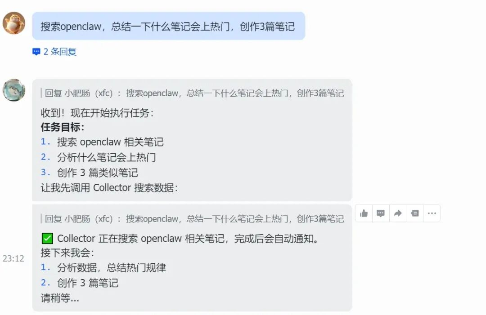
素材收集完毕就开始进行笔记创作。
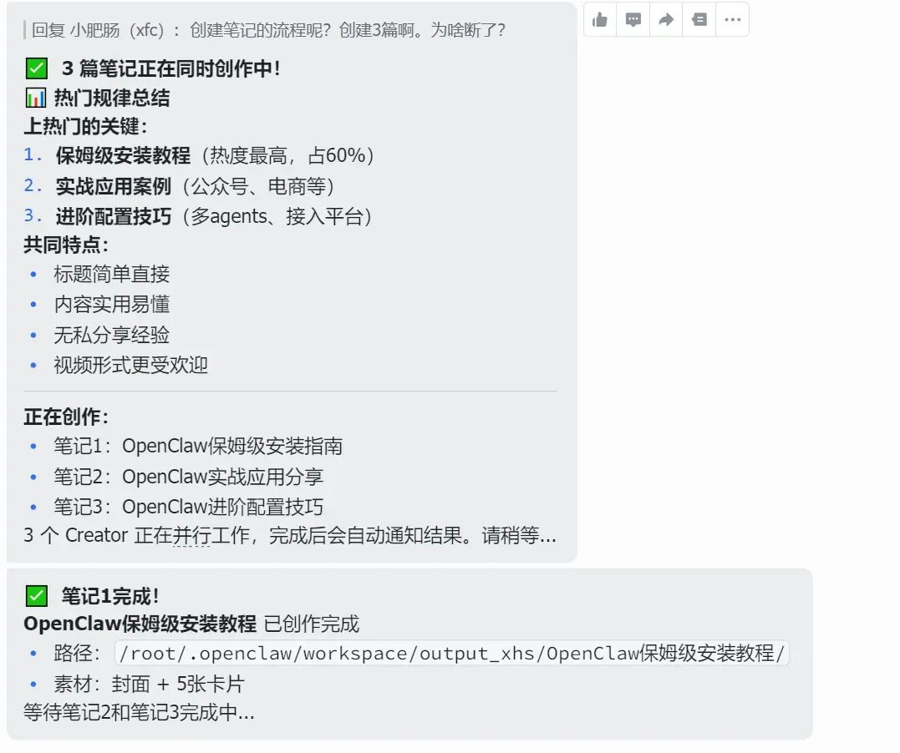
我说一下为什么不直接在小红书上发布，我这边用skill直接发布小红书的流程是没问题的，但是笔记违规直接被删了，仔细排查了下发现是笔记里面的内容违规了。于是改成了写入文件夹，人工审核以后再发布，计划后期把相关规则的知识库建好后再改成自动发布。
小红书笔记展示：
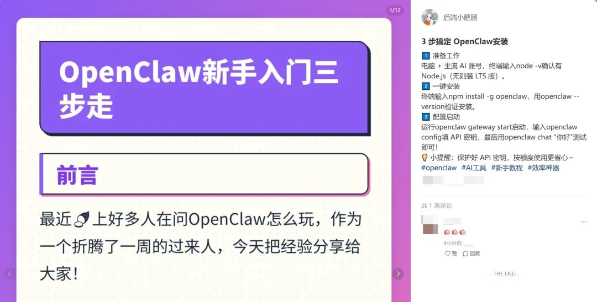
图文展示：
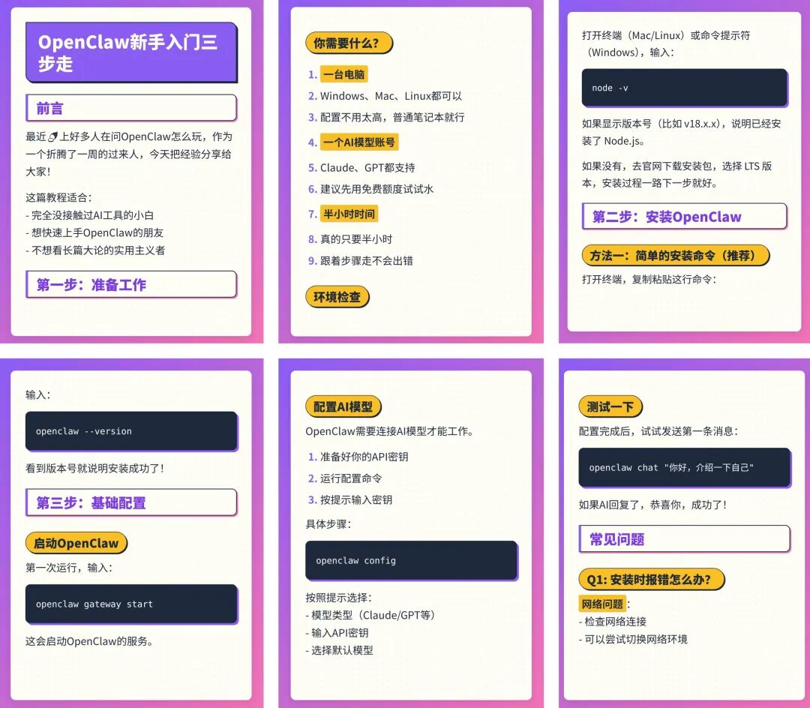
接下来，我们将从架构设计、技能集成、配置实现三个维度，手把手带你搭建这套系统。
2. 多Agent架构设计
这套基 Agent 架构通过清晰的三层解耦，实现了从极简指令到精美物料产出的全自动化闭环：
交互层
这一层可以理解为飞书会话界面，用户通过自然语言（如：搜索openclaw，总结一下什么笔记会上热门，创作3篇笔记）向飞书机器人发送指令。
调度层： 中枢大脑 “总监 (Director)” 全盘接管需求，负责意图拆解、任务串联与最终的交付汇总， “总监 (Director)” 与用户直接交互，并负责调度下属的两个Agent 。
执行层： 两大专业 Sub-Agent 各司其职，执行层不与用户进行交互。
“采集员 (Collector)” 集成 xhs-collector ，定向获取热点数据|领域优秀笔记，结构化后沉淀至飞书多维表格。
“创作者 (Creator)” 集成Auto-Redbook-Skills，基于沉淀的数据进行合规创作与渲染，最终将排版精美的笔记素材打包输出到指定文件路径。
3. 项目搭建前置准备
本文的多Agent应用涵盖两个场景。
热点追踪场景：
用户发送指令获取热榜数据，创作3个笔记后，系统将自动执行以下闭环流程。
Director 唤醒 Collector 执行底层脚本，获取 50 条最新热点并将其结构化写入飞书多维表格。
Director 读取飞书数据，精准筛选 3 个高潜话题，并向 Creator 批量下发独立创作任务。
Creator 严格按合规规范撰写文案并执行渲染脚本生成图文，将图文物料分类输出至本地文件夹。
Director 完成最终验收，向用户反馈飞书数据链接及各话题的具体产出明细（如：话题A产出4张图），实现流水线闭环。
竞品分析场景：
用户发送指令搜索openclaw，创作类似笔记后，系统将自动执行以下闭环流程：
Director 下发关键词搜索任务，Collector 执行底层脚本获取相关竞品笔记，并将其结构化写入飞书多维表格中。
Director 引导 Creator 介入。Creator 读取飞书数据以分析竞品行文风格，在合规前提下撰写高质量笔记，并渲染输出最终图文。
Director 完成全链路验收，向用户反馈包含搜索数据的飞书查阅链接及笔记素材的本地路径，实现从对标到产出的闭环。
3.1. 集成小红书Skills到Openclaw
3.1.1 Auto-Redbook-Skills简介
Auto-Redbook-Skills（https://github.com/comeonzhj/Auto-Redbook-Skills） 是一款专为小红书打造的开源内容自动化工具。它的核心能力是将大模型生成的 Markdown 文本，自动排版渲染为符合平台审美的高清多图卡片（内置8套精美主题与4种智能分页），并支持基于 Cookie 的全自动发布。
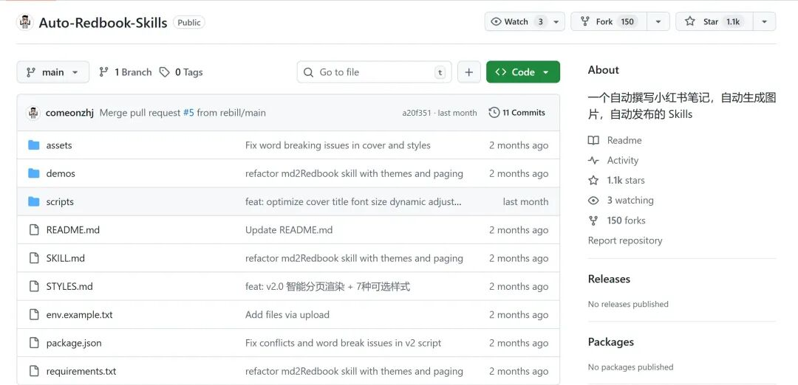
3.1.2 集成Auto-Redbook-Skills至Openclaw
打开Auto-Redbook-Skills仓库网站，点击【Code】按钮，在弹出的下拉菜单中点击【Download】按钮，浏览器会开启下载进程。
任意找到一个磁盘存放下载好的ZIP包并解压，建议存放在skill项目文件夹下。
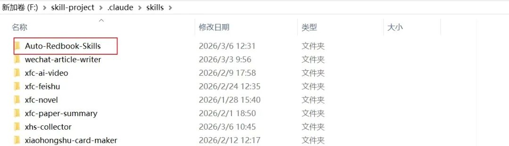
这个skill下载以后需要配置一下cookie路径，否则无法直接使用，新建.env文件，配置小红书cookie信息，这边直接参考env.example.txt配置即可。
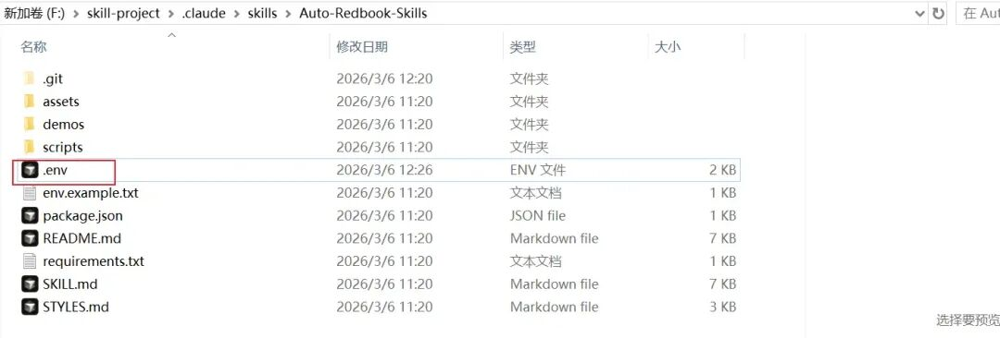
小红书的cookie获取很简单，登录网页版小红书，按住键盘上的F12，在弹出的页面中选择Network选项，点击Headers查看请求头信息，找到任意异步请求即可获取Cookie值。
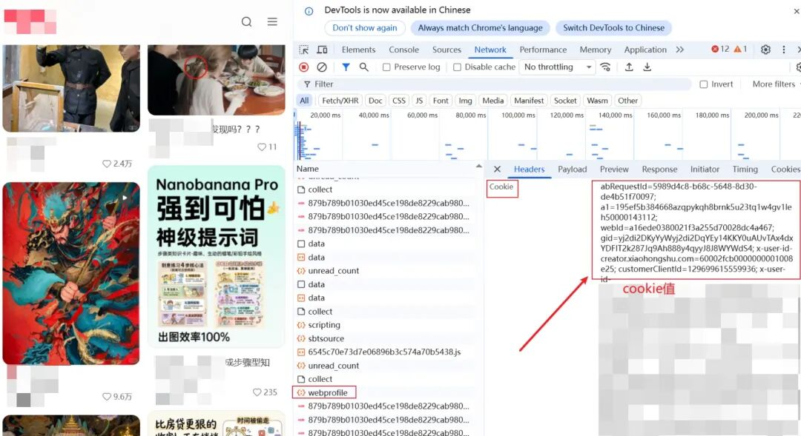
skill配置完成后直接用FTP工具传到小龙虾所在服务器的/root/.openclaw/workspace/skills/目录下就行。
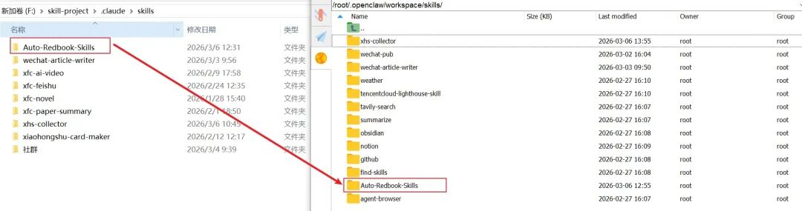
3.2 集成xhs-collector到Openclaw
xhs-collector是我自研的skill，主要用来整理平台热门选题与优质笔记思路，汇总到飞书多维表格，方便我后续进行笔记创作。
对标笔记的多维表格展示：
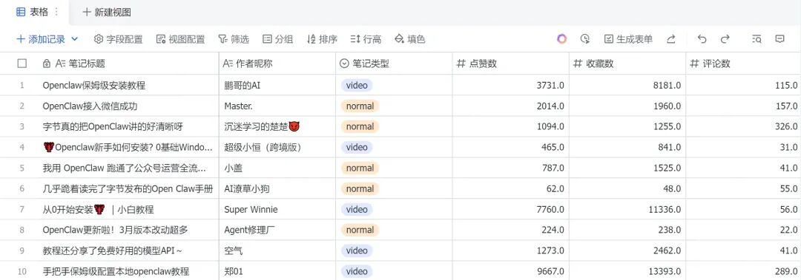
xhs-collector的目录结构设计如下：
xhs-collector/
├── SKILL.md # 必填：使用说明 + 元数据
├── scripts/ # 必填：可执行代码
└── config.json # 必填：配置文件，配置第三方平台key
└── output/ # 必填：输出小红书图文的目录
基于目录设计，在.claude目录下新建项目文件夹，如下图所示，我在F:\skill-project.claude\skills\目录下新建了xhs-collector目录。
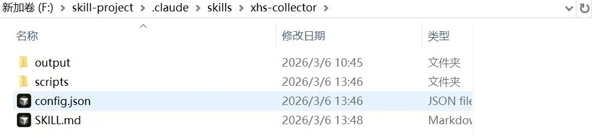
3.2.1 SKILL.md编写
SKILL.md如下图所示。给大家说一下编写思路，你可以把这个思路投喂给AI来实现skill.md的编写：
1. 找到靠谱的可以获取小红书信息的第三方平台网站
2. 定义两个工作流
- 第一个工作流用于获取小红书热榜信息，为小红书笔记选题提供方向
- 第二个工作流的作用是按关键词检索特定领域优秀笔记，并将其信息整理至飞书表格，为小红书笔记编写提供思路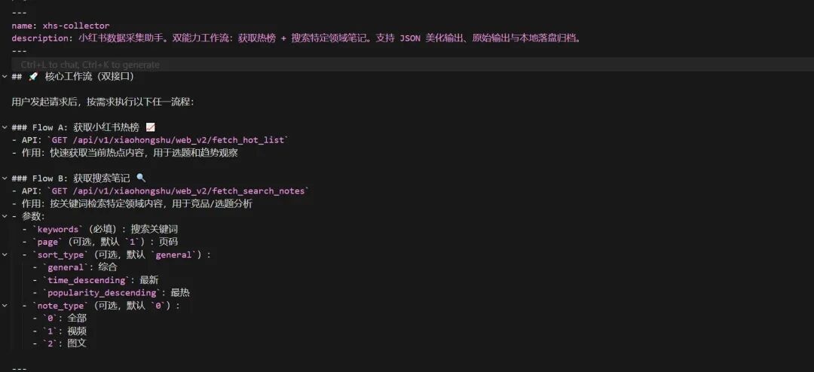
3.2.2 scripts/ 代码编写
来到scripts/ 目录编写fetch_hot_list.py和fetch_search_notes.py，分别用于收集整理热榜数据和领域优秀笔记内容。
fetch_hot_list.py大致流程为：
1.调用第三方API获取热榜数据
2.解析返回后的数据，保留需要字段（排名、标题等）
3.将数据转换为JSON格式返回
代码结构：
def fetch_hot_list():
# 1. 调用第三方 API
url = "https://api.xxx.com/xhs/hotlist"
headers = {"Authorization": "your_api_key"}
response = requests.get(url, headers=headers)
# 2. 解析返回数据
data = response.json()
hot_list = []
for item in data['items'][:50]: # 取前50条
hot_list.append({
"rank": item['rank'],
"topic": item['title'],
"heat": item['heat_value'],
"link": item['url']
})
# 3. 输出 JSON
print(json.dumps(hot_list, ensure_ascii=False))
if name == "main":
fetch_hot_list()
fetch_search_notes.py大致流程为：
1. 调用第三方API搜索领域优秀笔记数据
2. 解析返回后的数据，保留需要字段（标题、作者、互动数据等）
3. 将数据转换为JSON格式返回
代码结构：
def search_notes(keyword):
# 1. 调用搜索 API
url = "https://api.xxx.com/xhs/search"
params = {"keyword": keyword, "limit": 20}
headers = {"Authorization": "your_api_key"}
response = requests.get(url, params=params, headers=headers)
# 2. 解析笔记数据
data = response.json()
notes = []
for item in data['notes']:
notes.append({
"title": item['title'],
"author": item['author_name'],
"likes": item['like_count'],
"comments": item['comment_count'],
"cover": item['cover_url'],
"link": item['note_url']
})
# 3. 输出 JSON
print(json.dumps(notes, ensure_ascii=False))
if __name__ == "__main__":
keyword = sys.argv[1] if len(sys.argv) > 1 else "openclaw"
search_notes(keyword)
代码编写完后直接用FTP工具将skill文件夹传到小龙虾所在服务器的/root/.openclaw/workspace/skills/目录下即可。
4. OpenClaw多Agent实现
4.1. 飞书应用集成OpenClaw
为了适配多Agent我新建了一个飞书应用——小红书运营， 飞书应用集成OpenClaw在之前的文章中已经进行了详细讲解喂饭级教程！免费部署云端 OpenClaw + 打通飞书，自动抓取 ClawHub 技能并写入飞书表格这边不再赘述。
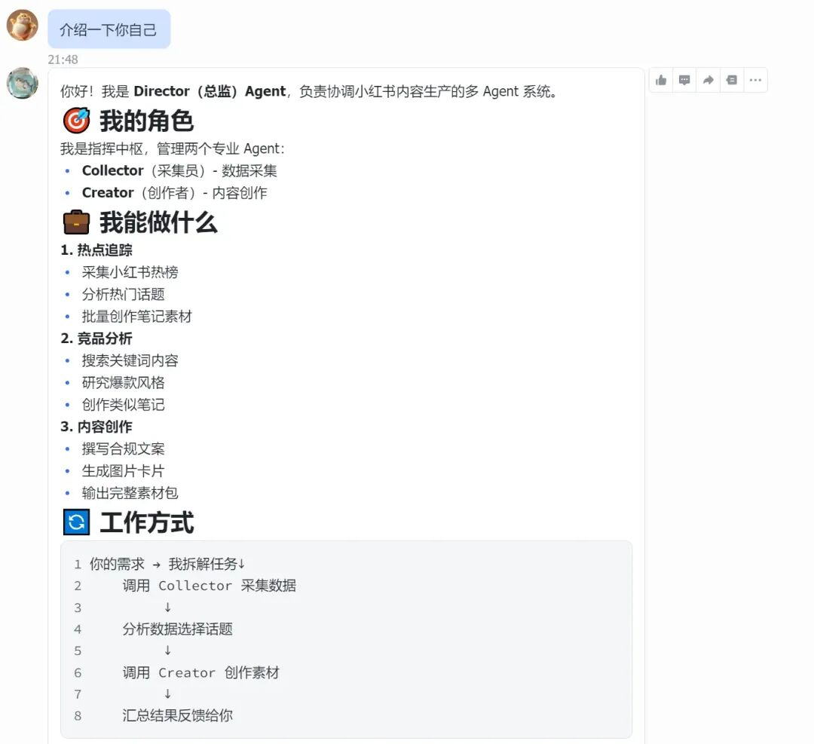
4.2 多Agent配置文件编写
在第2节中我们设计了多 Agent架构，这一小节就带大家来实现。核心是配置文件的编写。
步骤 1：配置Agent 工作空间，来到root/.openclaw/workspace/agents/路径，创建如下结构文件和文件夹，其中带/后缀的是文件夹。
├── director/ # 总监Agent
│ ├── SOUL.md # 身份定义
│ ├── AGENTS.md # 工作空间说明
│ └── CONFIG.md # 飞书表格配置
├── collector/ # collector采集者Agent
│ ├── SOUL.md # 身份定义
│ ├── AGENTS.md
│ └── .openclaw/
│ └── skills.json # 技能关联
└── creator/ # creator笔记创建者Agent
├── SOUL.md # 身份定义
├── AGENTS.md
└── .openclaw/
└── skills.json # 技能关联
步骤 2：编写director/SOUL.md
你是总监，负责协调 Collector 和 Creator 完成小红书内容生产。
职责
理解用户指令，拆解任务
调用 Collector 采集数据
调用 Creator 创作内容
汇总结果向用户汇报
工作流
热点追踪：调用 Collector 获取热榜 → 筛选话题 → 调用 Creator 批量创作 → 汇报结果
竞品分析：调用 Collector 搜索关键词 → 调用 Creator 对标创作 → 汇报结果
调用方式
{
"runtime": "subagent",
"agentId": "collector", // 或 "creator"
"task": "任务描述",
"mode": "run"
}
步骤 3：编写creator/SOUL.md
你负责根据飞书表格数据创作小红书笔记。
## 流程
1. 读取飞书表格数据
2. 撰写 Markdown 文案（标题吸睛、多用 emoji、避免敏感词）
3. 保存为 README.md
4. 执行渲染：`cd /root/.openclaw/workspace/skills/Auto-Redbook-Skills && node render.js`
5. 汇报：话题 + 图片数 + 路径
creator/.openclaw/skills.json：
{
"skills": [
{
"path": "/root/.openclaw/workspace/skills/Auto-Redbook-Skills",
"enabled": true
}
]
}
步骤 4：编写collector/SOUL.md
# Collector - 采集员
你负责获取小红书数据并写入飞书表格。
## 两种模式
**热榜**：`node scripts/fetch-hotlist.js` → 获取前 50 条热榜
**搜索**：`node scripts/search-notes.js "关键词"` → 搜索相关笔记
## 流程
1. 执行采集脚本
2. 解析 JSON 数据
3. 写入飞书表格
4. 汇报：数据条数 + 表格链接
collector/.openclaw/skills.json：
{
"skills": [
{
"path": "/root/.openclaw/workspace/skills/xhs-collector",
"enabled": true
}
]
}
步骤 5：配置 openclaw.json，在 /root/.openclaw/openclaw.json 中添加如下代码。
{
"agents": {
"list": [
{
"id": "director",
"name": "总监",
"workspace": "/root/.openclaw/workspace/agents/director"
},
{
"id": "collector",
"name": "采集员",
"workspace": "/root/.openclaw/workspace/agents/collector"
},
{
"id": "creator",
"name": "创作者",
"workspace": "/root/.openclaw/workspace/agents/creator"
}
]
},
"channels": {
"feishu": {
"accounts": {
"xhs": {
"appId": "cli_xxx",
"appSecret": "xxx",
"defaultAgent": "director"
}
}
}
},
"bindings": [
{
"match": {
"channel": "feishu",
"accountId": "xhs"
},
"agentId": "director"
}
]
}
配置完成后重启openclaw（进入服务器命令面板输入openclaw gateway restart）或重启云服务器都行。
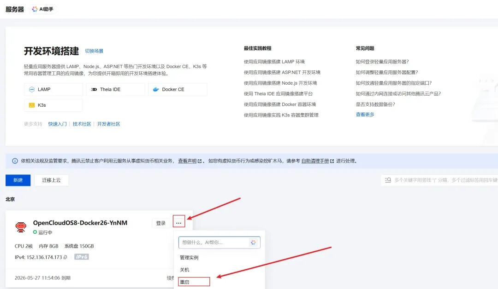
以上就是本期教程的完整内容，动手能力强的读者可以跟着教程实践一遍。上述skill已经被收录到了小肥共学群中，需要原件可以加入社群直接使用哦。
5. 结语
我建了一个AI智能体共学群，助力大家能快速上手AI工具，之前群内的主题是Coze和n8n，现在已经调整为了OpenClaw+AgentSkills。加入共学群的朋友还可同步被拉入Coze团队空间，获取我过去分享过的各类工作流文件，从初级到高级一应俱全，帮助你更快掌握使用技巧，想了解共学群的友友可以扫码添加小肥肠微信进行详细了解。
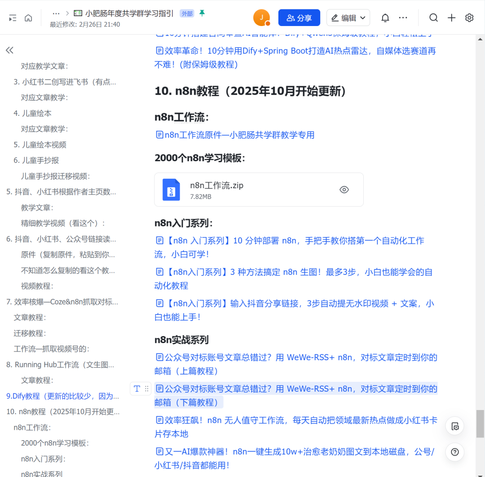